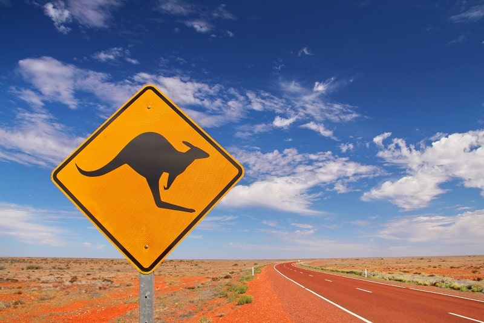

A cultura australiana é uma rica mistura de tradições indígenas, influências britânicas e multiculturalismo contemporâneo. Os aborígenes, como primeiros habitantes, trazem uma herança única com arte, música e espiritualidade ligadas à terra. A colonização britânica moldou aspectos da língua, política e costumes, enquanto as ondas de imigração diversificaram a culinária, festivais e estilos de vida. A Austrália valoriza atividades ao ar livre, como esportes, praia e natureza, refletindo seu clima e paisagens. A combinação de inovação, tradição e acolhimento define a identidade cultural australiana moderna.
Os aborígenes australianos são os povos originários da Austrália, com uma história que remonta a mais de 65 mil anos, sendo uma das culturas mais antigas do mundo. Eles possuem uma conexão profunda com a terra, expressa em suas práticas espirituais, canções e artes. Suas crenças giram em torno do Dreamtime (Tempo do Sonho), que narra a criação do mundo e define suas leis e tradições. Embora tenham enfrentado séculos de colonização e marginalização, continuam a lutar pela preservação de sua cultura e por direitos sobre suas terras ancestrais. Sua rica herança é um marco na diversidade cultural global.
O inglês australiano é uma variante do inglês que surgiu da colonização britânica no século XVIII, evoluindo com influências de línguas indígenas e de imigrantes. Ele se destaca pelo sotaque característico, expressões coloquiais (*slang*) e entonação única. É amplamente utilizado em todas as esferas do país, sendo uma marca cultural distinta da Austrália.